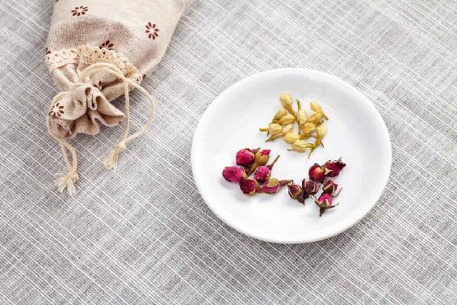
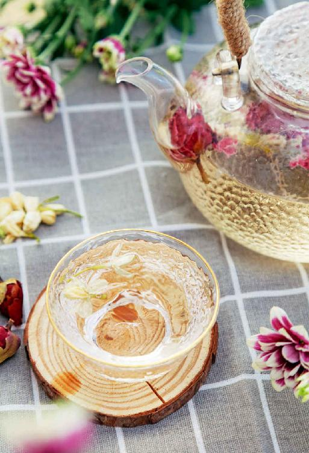

很快就要立夏了，春天马上就要过去了，因为春天实在是太美好了，所以我们总觉得春天过得特别快。
为了能在立夏后更好地养生，我们现在来反思和总结一下春季养生的功课有没有完全做到，有没有遗漏的地方？如果有，夏天到来后，我们该如何补救？
春天的第一个月，也就是初春的时候，您有没有多吃一些辛香味的绿色蔬菜，就是五辛盘，来帮助身体打开气的通道，排出冬天的浊气？
雨水节气的时候，您有没有多吃一些早春的韭菜，来帮助身体提升阳气？如果这一点做得也不够，进入初夏后如何补救呢？
对于初春没有做好的节气养生功课，初夏的时候，我们一定要通过坚持喝姜枣茶来补救。因为姜枣茶可以暖脾胃，宣发阳气，还可以帮助身体排毒。
当然，如果您初春的时候没有做好排毒工作，在初夏的时候乍一喝姜枣茶，可能会上火的。
如果是这样，在春天的最后几天里，我们要抓紧时间多吃一些荠菜，或者是多喝一些防感护生汤，来帮助我们的身体排出冬季的陈寒，这样再去喝姜枣茶就不容易上火了。
春天的第二个月，也就是仲春的时候，养生功课是疏肝健脾，要防止肝气郁结，不要生气或忧虑，以免肝气得不到宣泄，或者升发太过。

如果春天的第二个月各方面压力太大，又没有用疏肝健脾的食方、茶方来好好地疏理肝气、补益脾胃，夏天喝姜枣茶时可以加一些陈皮进去，让肝气得到疏理，因为陈皮是一种很好的理气食材。
仲春的时候，如果疏肝健脾的工作没做好，女性很容易出现乳腺增生，男性很容易血脂升高。所以在夏天的时候，我们还要继续来疏理身体的气，而且这个工作最好在夏天的前两个月来完成。如果到了7月份——盛夏，夏天的最后一个月，这时候人体会大量地出汗，会导致人体的气随汗排出，人就容易气虚，这时候就不是理气的好时机了。
能帮助我们疏理肝气的，除了陈皮就是玫瑰花了。如果您在春天的时候，没有用玫瑰花疏理好肝气，到初夏，您还可以继续用玫瑰花来疏肝养脾。
在夏天，能饮用玫瑰花的季节比陈皮还要多一个月。玫瑰花在夏天的三个月都是可以用的。
请记住，女性在生理期的时候，要尽量少用玫瑰花或不用玫瑰花，因为玫瑰花有活血的作用。当然，如果女性的生理期不畅通，那是可以饮用的。

在春天的第三个月，也就是暮春的时候，养生的重点就变成清肝养脾。如果这个月您没有做好清肝养脾的工作，也就是说，清明节气、谷雨节气的养生功课，您做得都不够彻底，没有很好地吃清明菜和喝谷雨茶来帮助身体清肝解毒、防止身体上火，那初夏的时候应该如何补救呢？
在春天的第三个月，养生功课没有做好的话，初夏喝姜枣茶容易口腔溃疡，最容易产生头面上火的问题，所以我们在喝姜枣茶之前要开路。
您不妨把谷雨节气的茶方再延长一两个星期来饮用，可以延长到五月中旬。这时候不要只用谷雨茶方，毕竟已经立夏了，天地之气已经转换了，可以试着在喝谷雨茶的时候，把姜和枣也加进去。一开始，只用姜枣茶比例的1/3，之后逐步增加，直到觉得自己可以喝姜枣茶而不上火为止。